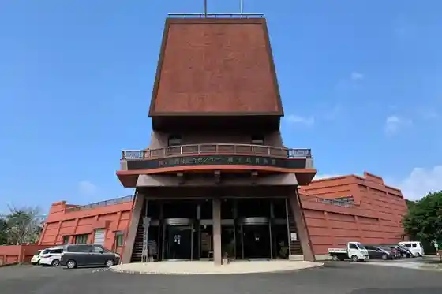
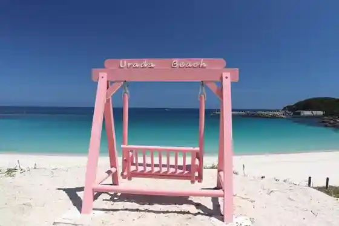
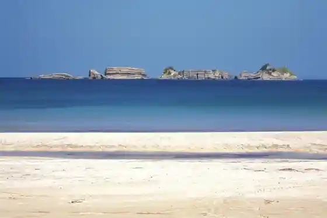
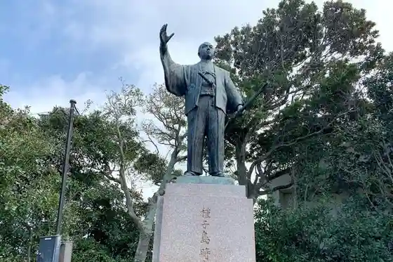

Shushi Shima Kaihatsu Sogo Center Teppo Kan
Nishinoomote, Kagoshima · 0997-23-3215 · Official / source link

Urata Beach
Nishinoomote, Kagoshima · 0997-22-1111 · Official / source link

Yokino (Yoki no) Beach
Nishinoomote, Kagoshima · 0997-22-1111 · Official / source link

Akaogi Castle Ruins
Nishinoomote, Kagoshima · 0997-22-1111 · Official / source link
Shushi Shima Tokitaka Zo
Nishinoomote, Kagoshima · 0997-22-1111 · Official / source link

Appo Rando
Nishinoomote, Kagoshima · 0997-24-3611 · Official / source link
Akaogi Shiro Bunka Densho Kan Gesso Tei
Nishinoomote, Kagoshima · 0997-22-2101 · Official / source link
Shushi Shima Ie Bochi (Gobo Bochi)
Nishinoomote, Kagoshima · 0997-23-3215 · Official / source link
Tennyogakura
Nishinoomote, Kagoshima · 0997-22-1111 · Official / source link
Ki Orisaka
Nishinoomote, Kagoshima · 0997-22-1111 · Official / source link
Wakasa Hime Bochi
Nishinoomote, Kagoshima · Official / source link
Yaita Kimbe Kiyosada Zo
Nishinoomote, Kagoshima · 0997-23-3215 · Official / source link
Tetsu Hama (Kanehama) Coast
Nishinoomote, Kagoshima · 0997-22-1111 · Official / source link
Itajiki Hana
Nishinoomote, Kagoshima · Official / source link
Kishiga Saki
Nishinoomote, Kagoshima · 0997-22-1117 · Official / source link
Mehirugi Jisei Gunraku
Nishinoomote, Kagoshima · 0997-23-3215 · Official / source link
Hego Jisei Gunraku
Nishinoomote, Kagoshima · 0997-23-3215 · Official / source link
Ise Shrine
Nishinoomote, Kagoshima · 0997-22-1111 · Official / source link
Shushi Shima Onsen Akaogi Baths
Nishinoomote, Kagoshima · 0997-22-0019 · Official / source link
Shushi Shima Ie Bochi (O Hai to Bochi)
Nishinoomote, Kagoshima · 0997-23-3215 · Official / source link
Ji En Jiseki (Yasakajinja Nai)
Nishinoomote, Kagoshima · 0997-22-1111 · Official / source link